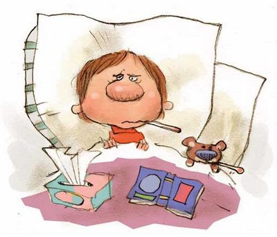
1. Сколько процентов детей, по предварительным данным страдают хроническими заболеваниями по причине физического бездействия?
2. Что занимает первое место в развитии хронических заболеваний
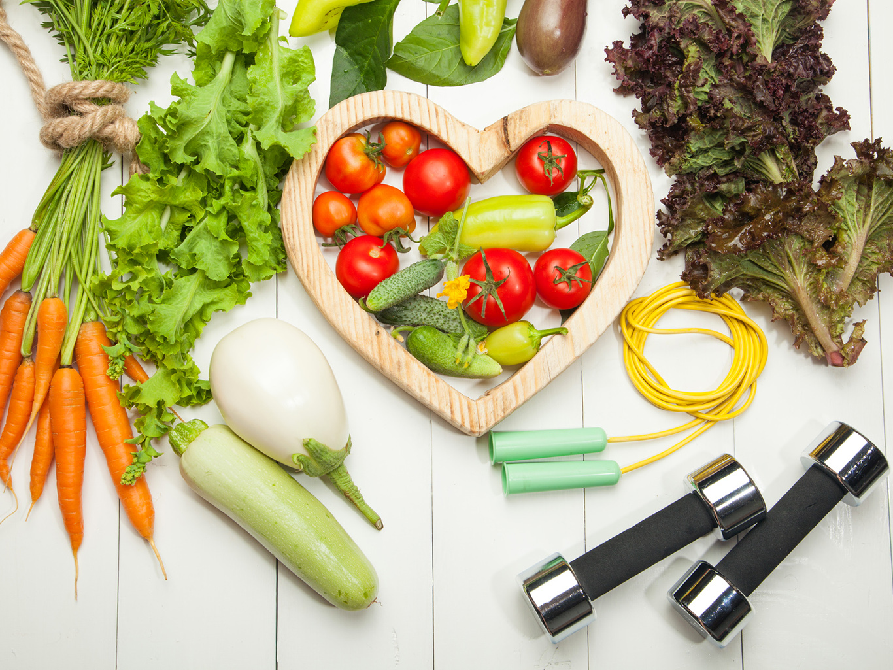
3. Какое определение здоровья является наиболее верным?
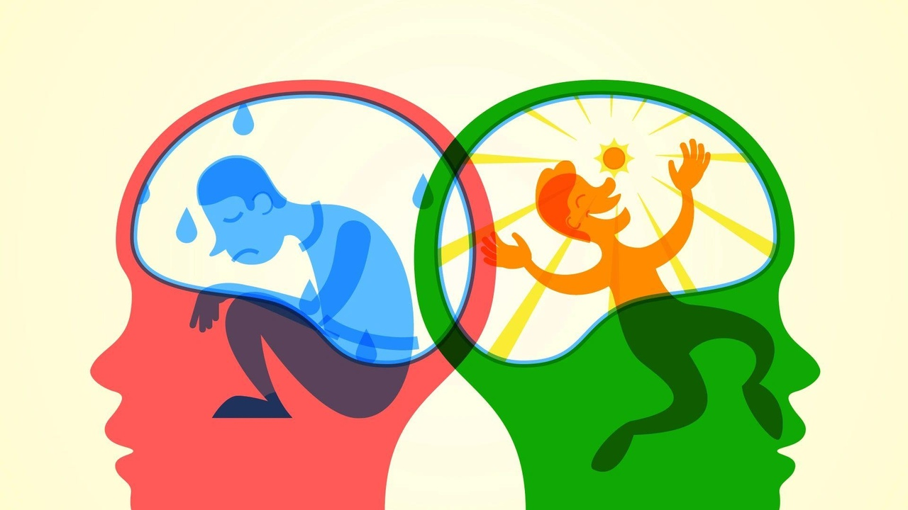
4. Что предполагает психологическое здоровье
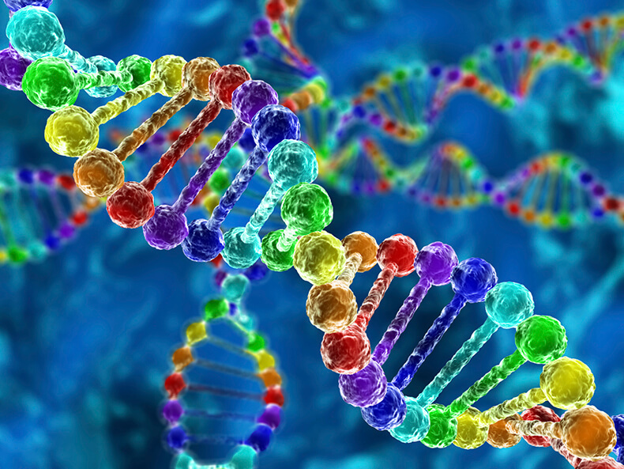
5. На сколько процентов генетический фактор влияет на здоровье человека
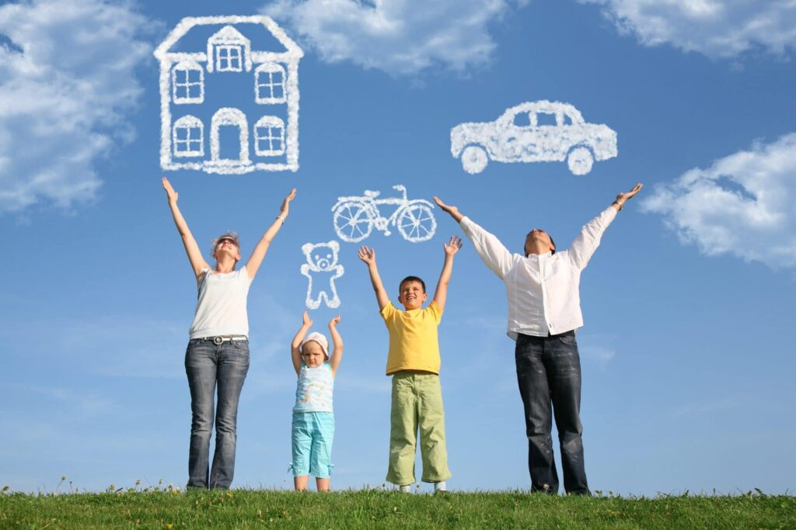
6. Что понимается под определением социального благополучия?
7. От чего наиболее зависит человеческое здоровье?
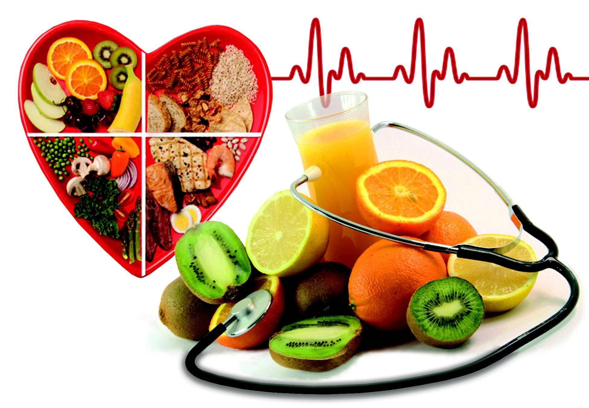
8. Что не входит в число критериев здоровья?
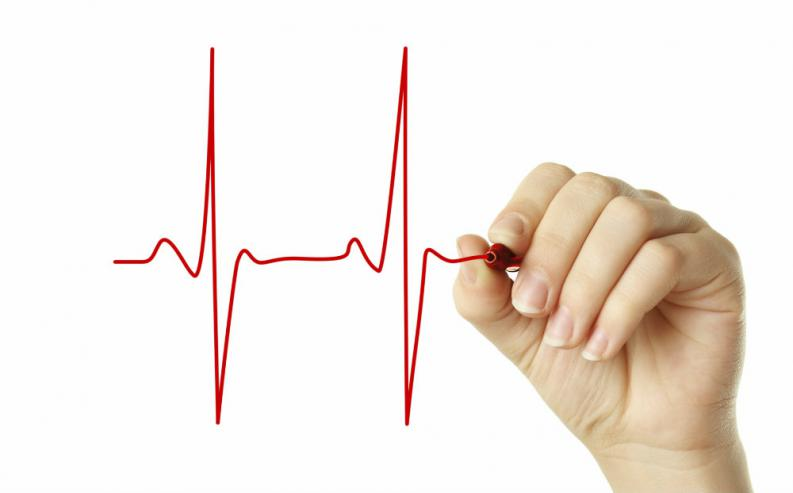
9. Какова норма ЧСС у физически неактивных людей?
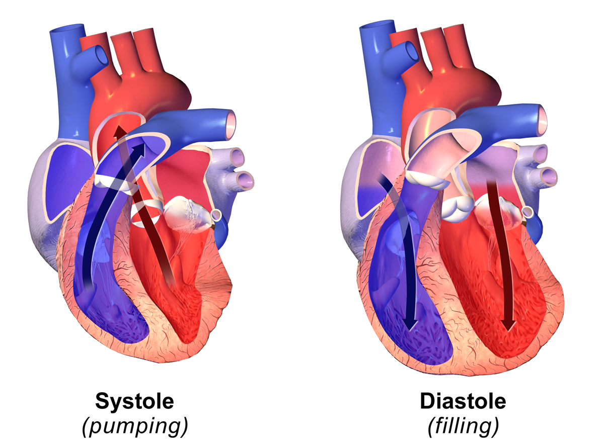
10. У физически малоактивных людей за сутки происходит … излишних сердечных сокращений
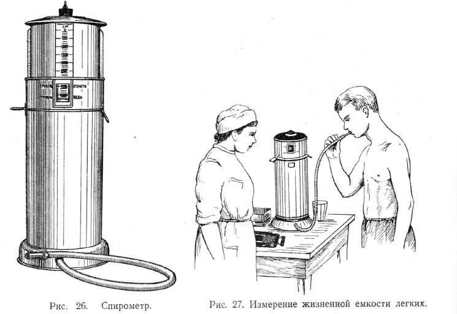
11. Какой показатель ЖЕЛ для мужчины со средним физическим развитием является нормальным?
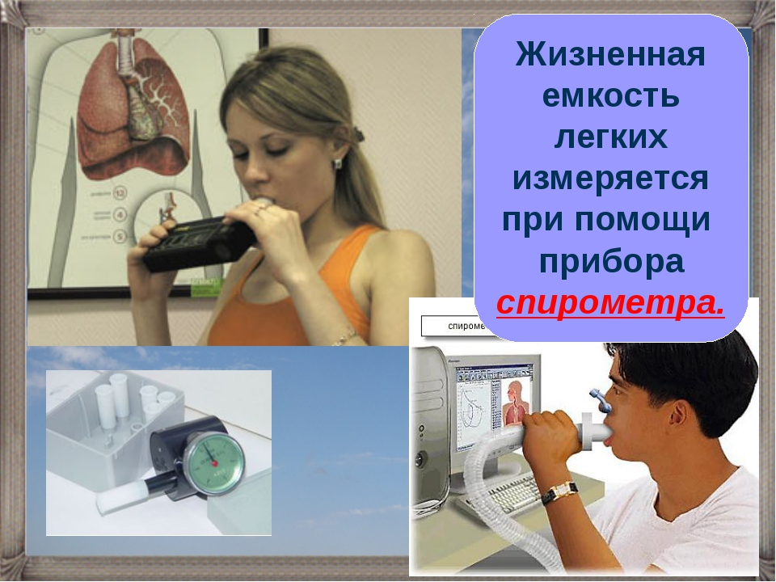
12. Какой показатель ЖЕЛ для женщины со средним физическим развитием является нормальным?
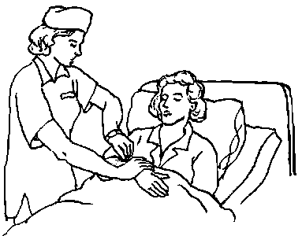
13. Какова нормальная частота дыхания у нетренированного человека?
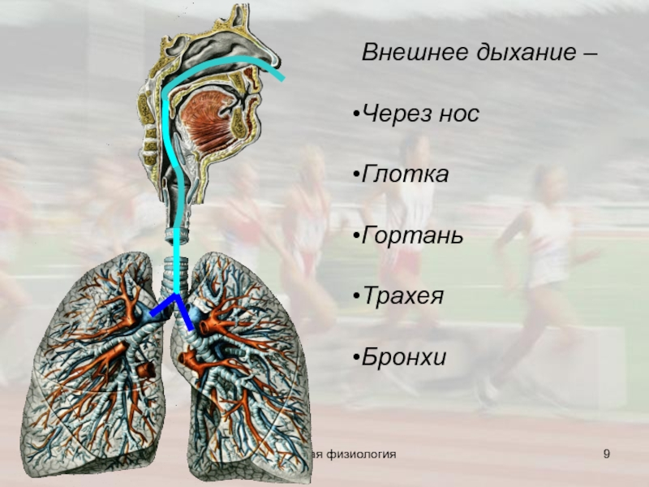
14. У тренированного человека система внешнего дыхания работает более ...
15. Какие болезни развиваются при недостаточном поступлении кислорода?